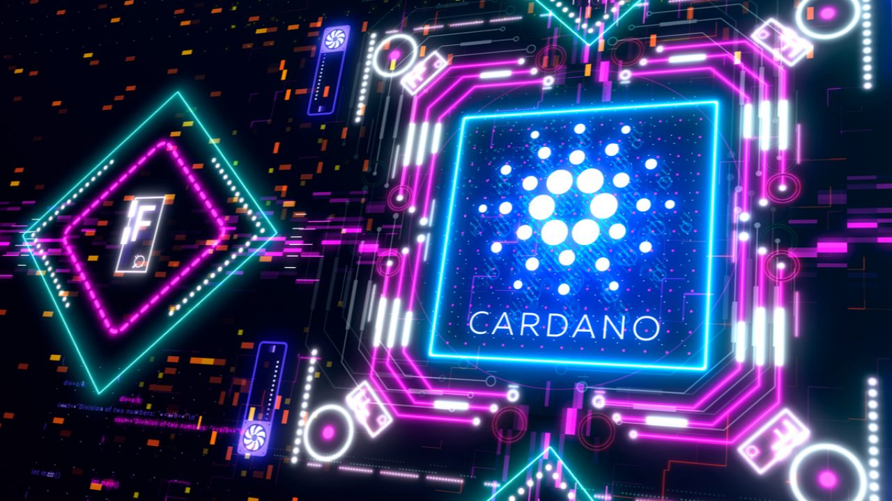

Ethereum (ETH)
postado 02 abril 2022
Ethereum (ETH) é a segunda maior criptomoeda do mundo, atrás apenas do Bitcoin. Lançada em 2015, conta com uma tecnologia mais avançada do que as primeiras criptomoedas.
Seu grande diferencial em relação ao Bitcoin é que o Ethereum tem como objetivo usar a tecnologia do blockchain para qualquer tipo de informação que possa ser armazenada digitalmente: contratos, registros e votações, por exemplo, além das transferências financeiras "tradicionais" das criptomoedas.
O Ethereum utiliza a tecnologia blockchain que é capaz de armazenar registros de transações num arquivo que é uma espécie de planilha pública, distribuída e de segurança garantida por criptografia. As transações publicadas no blockchain são verificadas e validadas pelos próprios usuários num processo conhecido como mineração que ocorre via execução de códigos de natureza criptográfica, sendo assim, o sistema pode funcionar num protocolo distribuído recompensando seus usuários pelo poder computacional empregado por eles.
Contratos inteligentes "assinados" no blockchain do Ethereum e a mineração são pagos em ether, o combustível da plataforma.
Porém, o ponto que torna o Ethereum diferente das altcoins, em geral, e o diferencial da moeda digital mais difundida (o bitcoin), é que o Ethereum visa levar a tecnologia do blockchain e os contratos inteligentes para "tudo" que possa ser programado.
O princípio é que toda transação, registro, execução de código distribuído, assinatura de contrato digital, ou qualquer outra aplicação executada na rede do Ethereum, seja paga em ether, sendo assim, o Ethereum pode ser considerado um grande computador (de escala planetária) onde usuários pagam pela quantidade de recurso utilizado.
Cardano (ADA)
postado 03 abril 2022 
A Cardano (ADA) é uma plataforma criada em 2015 por Charles Hoskinson, co-fundador da Ethereum, e possui um projeto bastante ambicioso. Sua intenção é unir as melhores características e funcionalidades de todas as mais de 2 mil criptomoedas existentes no mundo, resolvendo problemas e oferecendo novas soluções para as moedas digitais.
O projeto é definido como a terceira geração de criptomoedas. Neste raciocínio, o Bitcoin seria a primeira geração, o Ethereum a segunda, e a Cardano a terceira geração.
Um dos principais objetivos da Cardano é, usando um blockchain, ser uma moeda digital, assim como o Bitcoin.
A ideia é servir como um meio de pagamento alternativo em países que tem dificuldade de acesso a bancos. Para isso, um de seus focos é melhorar a velocidade com que as transações são feitas.
Além disso, a Cardano foi a primeira criptomoeda baseada em uma metodologia científica. Isso trás mais força para seu código, que é avaliado e revisado por uma grande equipe de pesquisadores, cientistas, engenheiros e desenvolvedores.